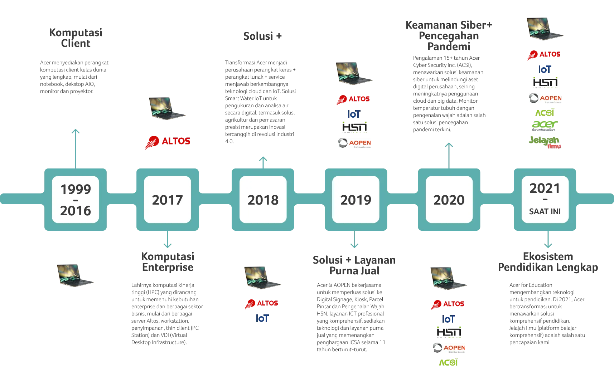

Hadir sejak 1999 sebagai penyedia perangkat komputasi, Acer Indonesia melanjutkan perjalanan sebagai mitra transformasi digital pada 2021.
Sejak berdiri pada tahun 1976, Acer telah menjadi salah satu perusahaan teknologi terkemuka di dunia. Dengan misi untuk mendobrak batasan antara manusia dan teknologi, Acer menghadirkan inovasi yang mendukung kehidupan lebih cerdas, efisien, dan terhubung.
Kami menawarkan rangkaian produk berkualitas tinggi, mulai dari laptop, desktop, monitor, hingga solusi teknologi lainnya yang dirancang untuk memenuhi kebutuhan pribadi, profesional, maupun bisnis.
Menjadi pelopor teknologi yang menciptakan masa depan lebih cerdas dan terhubung untuk semua orang.
Sebagai perusahaan global, Acer berkomitmen untuk memberikan kontribusi positif terhadap lingkungan dan masyarakat. Kami terus menerapkan praktik berkelanjutan dalam operasional kami, serta memberdayakan komunitas melalui berbagai program pendidikan dan pelatihan teknologi.
Acer hadir di lebih dari 160 negara di seluruh dunia, dengan tim yang terdiri dari para profesional terbaik dalam industri teknologi.
Hubungi kami melalui kontak resmi atau kunjungi website global Acer untuk informasi lebih lanjut.